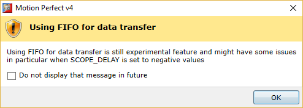

Select which axis to use as the “up” direction in the Front View.
When checked, this causes an informational display of how to navigate in the view using a mouse.
As navigational information I easily displayed by clicking the info icon at the bottom left of the view this is probably left disabled.
When checked this will cause a warning dialog to be displayed if the user chooses to collect oscilloscope data using a FIFO.
